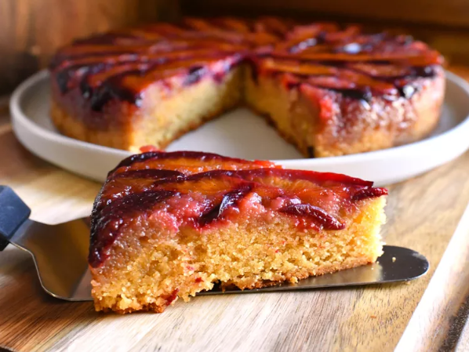

Plum Almond Upside Down Cake
Back To Main Page

This decadent plum almond upside down cake features tart plums atop a super moist almond cake.
The cake is delicious as-is, but adding a sprinkling of toasted almond slices before serving is excellent as well.
Ingredients
Browned Butter
- 1/2 cup unsalted butter
Topping
- 5 tablespoons unsalted butter
- 1/2 cup firmly packed light brown sugar
- 1/4 teaspoon ground cinnamon
- 1/8 teaspoon ground nutmeg
- 3 to 4 Italian plums, pitted and thinly sliced
Cake Batter
- 1/2 cup firmly packed light brown sugar
- 1/4 cup white sugar
- 3/4 teaspoon salt
- 1/2 teaspoon ground cinnamon
- 1/4 teaspoon ground nutmeg
- 1 1/2 cups superfine blanched almond flour
- 3 large eggs
- 1 tablespoon freshly squeezed lemon juice
- 1 teaspoon almond extract, or to taste
- 1 teaspoon vanilla extract
- 6 tablespoons all-purpose flour
- 3/4 teaspoons baking powder
Steps to make:
- Preheat the oven to 350 degrees F (175 degrees C).
Generously butter a 9-inch round cake pan and line the bottom with parchment paper.
- Place 1/2 cup butter in a light-colored saucepan over medium-low heat.
Cook, stirring constantly, until butter is browned, 5 to 7 minutes.
Pour browned butter into a large mixing bowl and allow to cool for at least 10 minutes.
- For topping, place 5 tablespoons butter in the same saucepan you browned the butter in; allow residual heat to melt it (or melt over very low heat).
Pour melted butter into the prepared cake pan; sprinkle with brown sugar, cinnamon, and nutmeg.
Gently mix ingredients together in the pan, then spread into an even layer.
Arrange sliced plums over the butter-sugar mixture in a circular pattern, gently but firmly pressing the plums into the mixture, until the bottom of the pan is evenly covered.
Set aside.
- For cake: to the bowl with browned butter, add brown sugar, white sugar, salt, cinnamon, and nutmeg.
Mix until combined. Stir in almond flour until incorporated (mixture will be grainy).
Add in eggs 1 at a time, beating well after each addition with an electric mixer.
After last egg has been added, beat mixture for 3 minutes on medium-high speed until light and fluffy.
Beat in lemon juice, vanilla, and almond extracts. Reduce speed, and stir in flour and baking powder until just combined.
Pour batter over the plums; spread gently in an even layer.
- Bake in the preheated oven until cake is evenly browned and the center of the cake springs back when lightly touched, 45 to 55 minutes.
- Cool cake in the pan for 10 minutes. Invert onto a serving platter. Gently peel off parchment paper, and allow cake to cool completely before serving.